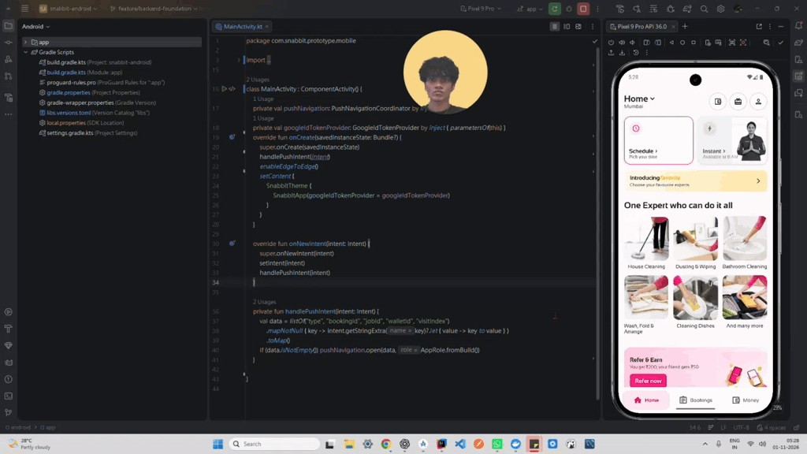

Routine
“Let me book the whole week at once”
A shop owner needs help every morning. Booking the same job five times takes time they could spend opening the shop.
Designing for the moments that make home services worth booking again.

This is what I’ve observed.
I kept noticing two different reasons people open Snabbit. One needs help today. The other needs to know help will show up again tomorrow.
The first person has a problem right now. Their regular house help is away. Guests are coming. Or they have finally looked around the flat and realised it needs cleaning. They want someone to come today, do the job, and let them get on with their day.
Then there is the person who already knows they will need help next week. A shop owner wants the floor cleaned before opening. A founder wants the office ready each morning. A restaurant owner wants the tables and kitchen sorted before customers walk in. They do not want to make the same booking every night.
So I looked at what happens after they tap Book.
I kept seeing four breaks in the visit: booking again, trusting a replacement, sharing home details, and getting through the door.
Two small moments made this real for me.
First, I want to say thank you. Snabbit has really helped my mom with cooking and cleaning, and it’s just one tap away. But my mom isn’t comfortable with apps, so it’s always me or my sister who books for her. And when the worker arrives, we’re usually not home. The OTP comes to our phones, not hers. So she calls us, and we miss it because we’re in a meeting or the phone is on silent. The worker waits at the door, and sometimes my mom even tries the support line, which is harder for her than the app itself. Booking took a few seconds. Starting the service took 10 minutes.
The second thing came from my neighbour. She has two pet pitbulls, and they aren’t comfortable around strangers. When she booked Snabbit, the dogs were leashed, but they kept barking and jumping at the door. The worker got scared, did the bare minimum, and waited for the time to get over. Nobody did anything wrong. The app simply never asked about her pets, and the worker never knew.
One problem is a code on the wrong phone. The other is a worker who did not know about the dogs. Both happen because a detail that matters at the door was missing earlier.
That changed how I thought about the problem. I wanted the person at home to receive the OTP, and the worker to know the conditions of the visit before arriving.
I also looked at what customers were saying in public. Their posts put words to the problems I had noticed: uncertain quality, late changes, and support that did not always resolve the issue.
I built around four moments where a quick booking can still fail.
“Let me book the whole week at once”
A shop owner knows tomorrow’s cleaning needs today. Repeating the same booking steals time before opening.
What I built
When a trusted worker is unavailable, a name and photo cannot show the replacement’s skill. I wanted customers to see what they are choosing.
What I built
A worker may discover pets, non-veg utensils, or personal limits only at the door. That can end the visit before it starts.
What I built
Someone books for a home or shop, but nobody there has the OTP. The worker waits while they try to reach the booker.
What I built
Choose several days at once. See who is coming. Share the home details that matter. Send the OTP to the person who is actually there.
If I were part of the team, this is what I’d want to work on.
Customers already explain what went wrong in public. I saw replies that apologised and asked for a phone number, but did not address the problem in the post. Give support room to say what happened, what happens next, and when the customer will hear back.
A home service is personal. I would rather hear a neighbour say “I book her every week” than watch another perfect-looking ad. Let customers tell the story in their own words. Show a real worker and a real visit.